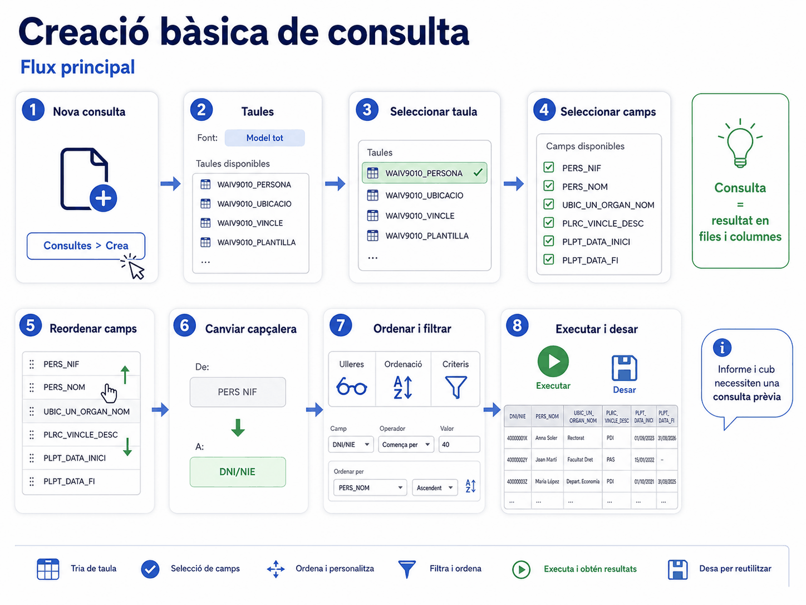
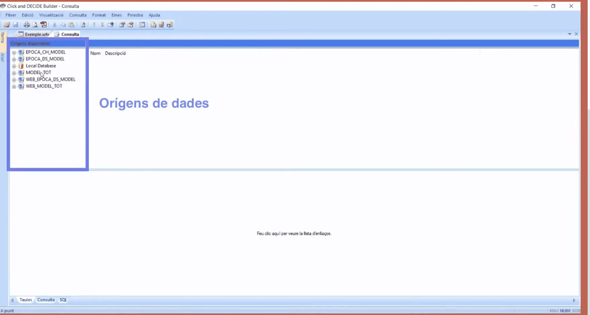
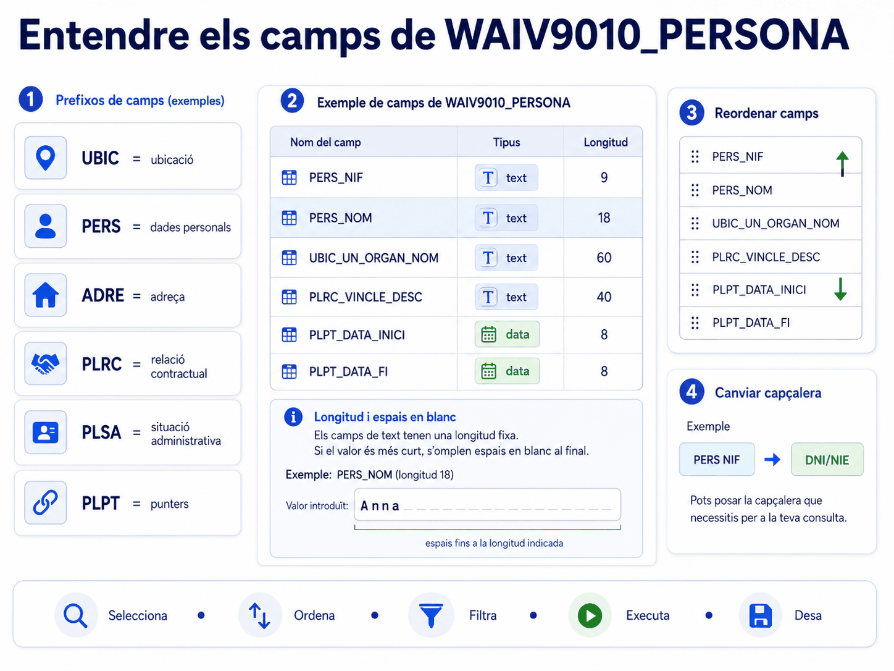
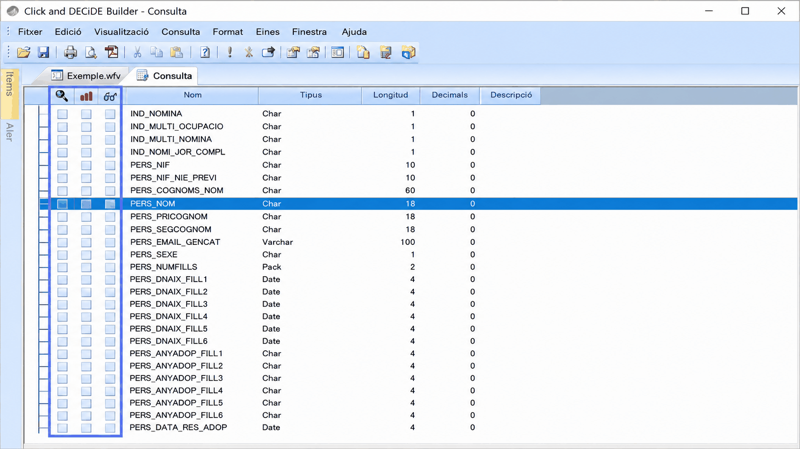
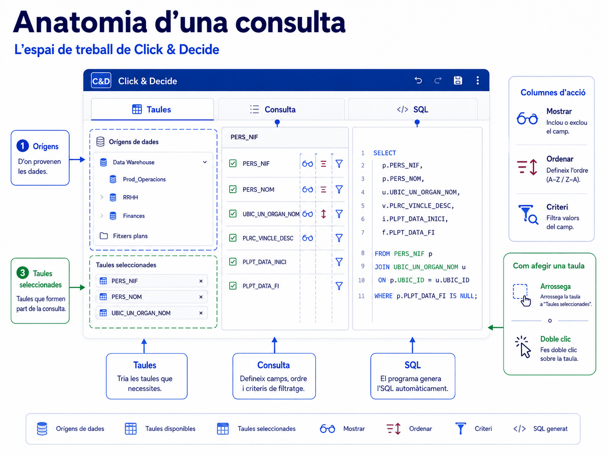
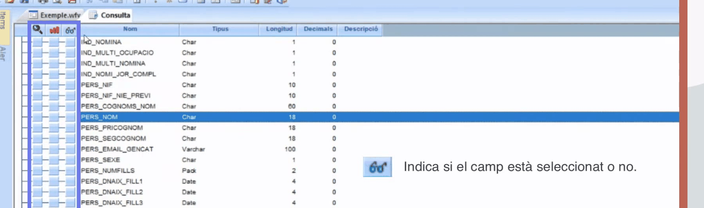
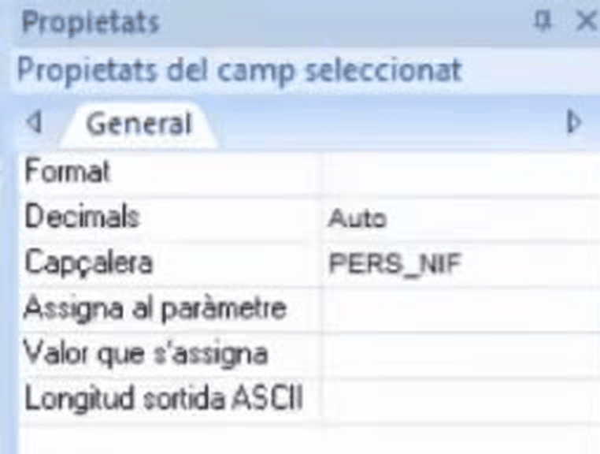

Apartat 1Crear la consulta
Amb el projecte obert, es prem el botó Consultes i després Crea. Recordeu la regla de la unitat 3: la consulta ha de viure dins d'un projecte, i el projecte ha d'existir i estar desat abans.

Apartat 2Les tres pestanyes
En crear la consulta s'obre una pestanya de treball nova que, a la part inferior esquerra, en té tres més. Val la pena saber què fa cadascuna abans de tocar res.
Taules
On es tria l'origen de dades i les taules de les quals sortirà la informació. També és on s'esborra una taula que s'ha triat per error.
Consulta
L'àrea principal. Aquí es defineixen els camps que es volen veure, l'ordre i els criteris. És on passareu el 90 % del temps.
SQL
El programa hi tradueix automàticament el que aneu fent a llenguatge de base de dades. No cal saber SQL, però mirar-la ensenya molt.
Apartat 3L'origen de dades
A la pestanya Taules la finestra queda dividida en tres parts:
- a la part superior esquerra, els orígens de dades disponibles segons el vostre perfil;
- a la banda dreta, les taules que es carreguen en triar un origen, també segons el perfil i l'àmbit de dades a què accediu;
- a la part inferior, les taules que ja heu seleccionat per a aquesta consulta.
El més habitual és seleccionar l'origen de dades
"Model tot". És possible que el vostre usuari en tingui
més d'un d'autoritzat, però aquest és el que heu de fer servir sempre.
L'única excepció és el control horari, que utilitza
EPOCA_CH_MODEL.
"Model tot" és el nom de l'origen de dades, i també el del projecte que s'obre per defecte que vam veure a la unitat 3. No tenen res a veure: un és l'arrel de l'arbre de taules del servidor i l'altre és un fitxer. La coincidència és una font de confusió habitual.
En fer clic a l'origen, al cap d'una estona apareixen totes les taules a la vostra disposició. Si tarda, no és que s'hagi penjat: està carregant l'arbre.

MODEL_TOT. A sota de tot hi ha la franja dels enllaços, que és on es lliguen les taules quan n'hi ha més d'una. Les tres pestanyes de la consulta són a baix a l'esquerra.
Videotutorial 4 de l'EAPC, minut 1:19.
A sota de tot de la pestanya Taules hi ha una franja que diu "Feu clic aquí per veure la llista d'enllaços". Amb una sola taula no serveix de res, i per això passa desapercebuda; però és exactament allà on es lliguen les taules quan la consulta n'ha de fer servir més d'una. Ho veureu a la unitat 12.
Apartat 4Seleccionar la taula
Hi ha dues maneres de portar una taula a la consulta:
-
Arrossegar-la cap a la part inferior
Agafeu la taula de la banda dreta i arrossegueu-la a la part inferior de la pantalla. Us deixa a la pestanya Taules, que és on voleu quedar-vos si heu de seleccionar més d'una taula.
-
Doble clic sobre el nom de la taula
Fa el mateix, amb una diferència: el programa salta de pestanya i us porta directament a Consulta, mostrant els camps que conté.
Si us equivoqueu de taula, se selecciona fent clic al seu títol des de la pestanya Taules i es prem Supr.
Si arrossegueu la taula equivocada, no cal començar de nou: feu clic al títol de la taula a la zona de sota i premeu la tecla Supr. Desapareix de la consulta.
Apartat 5Què conté WAIV9010_PERSONA
Farem servir la taula de persones. Abans de seleccionar cap camp, les tres preguntes de la unitat 00:
El videotutorial la resumeix en una frase que val la pena recordar tal com sona: "hi trobarem totes les persones que actualment estan treballant, o bé han de rebre alguna retribució en el mes en curs". Les dues meitats de la frase compten: qui treballa i qui cobra. Per això hi surt gent que avui no ocupa cap lloc.
- Contingut
- Persones que ocupen, han ocupat o ocuparan un lloc de feina el mes en curs, i persones que no n'ocupen cap però tenen nòmina associada.
- Vigència
- Dades actuals, vigents el dia anterior.
- Tipus de càrrega
- Diària, durant la nit.
- Tipus de registres
- Únics. Camp clau:
PERS_NIF. - Dades que porta
- Personals, ubicació, relació contractual, situació administrativa, lloc ocupat actualment i l'immediatament anterior, grau, antiguitat i algunes de nòmina.
- Abast
- Segons el perfil: totes les persones, les del departament o les de la unitat orgànica.
El camp que decideix qui hi surt: IND_ACTIU
Aquesta taula no conté només la gent en actiu avui. El camp
IND_ACTIU és el que separa els tres col·lectius, i la seva
definició tècnica és més precisa del que sembla:
| Valor | Definició | Condició |
|---|---|---|
| A | En actiu a data d'avui | Data fi d'ocupació nul·la, o posterior o igual a la data actual. |
| M | En actiu aquest mes | Ha ocupat lloc algun dia del mes en curs, però no avui. |
| N | No actiu | No té punter, o la data fi d'ocupació és anterior al dia 1 del mes actual. |
Si executeu la consulta sense filtrar per IND_ACTIU, el
nombre de registres no és la vostra plantilla: hi ha gent
que ja no hi treballa però encara cobra endarreriments. A la unitat 7
construirem el filtre correcte.
Apartat 6Els prefixos dels camps
En passar a la pestanya Consulta es veu la taula amb tots els seus camps. Els noms fan por al principi, però segueixen una convenció: un prefix de tres o quatre lletres que indica la família a la qual pertany el camp. Un cop la sabeu, trobar un camp deixa de ser buscar a cegues.
| Prefix | Família | Hi trobareu |
|---|---|---|
| UBIC | Ubicació | Tipus d'ens, departament, unitat orgànica. Són els primers de la llista. |
| Indicadors | Indicadors | Just després dels d'ubicació. Aquí hi ha IND_ACTIU. |
| PERS | Dades personals | NIF, cognoms i nom, sexe, edat, data d'ingrés, nacionalitat. |
| ADRE | Adreces | Adreça habitual, codi postal, municipi. |
| PLRC | Relació contractual | Vincle, cos, escala, categoria, grup, especialitat. |
| PLSA | Situació administrativa | Servei actiu, serveis especials, motiu i dates. |
| PLPT | Punters | La relació persona-lloc: com ocupa el lloc i les dates d'inici i fi del darrer punter. |
| TRIE | Trienis | Quantitat, data de venciment i grup del darrer trienni. |
| PLPA | Ubicació de la plaça | La mateixa estructura que UBIC però referida a la plaça: PLPA_TIPUS_ENS, PLPA_DEPARTAM_CODI, PLPA_UN_ORGAN_NOM... |
| LLOC | Lloc que ocupa | Codi i nom del lloc, tipus, prefix de tractament, estat de plantilla, jornada, grup d'accés, funció. |
| NOMI | Nòmina | Compte bancari, dates d'alta i baixa, número patronal, epígraf. |
| Càrrega | Control | Els dos darrers camps de la llista: DATA_CARREGA i HORA_CARREGA. |
Baixant per la graella es veu que la persona no porta només les seves
dades: porta també les del lloc que ocupa, amb el prefix
LLOC. Això vol dir que moltes consultes que semblen demanar
dues taules es resolen amb la de persones i prou. Només cal anar a
WAIV9080_LLOC quan es vol mirar el lloc com a lloc:
els vacants, els que ningú ocupa, els que estan en una situació concreta
de plantilla.
La data i hora de càrrega us diuen exactament a quin moment corresponen les dades que esteu mirant. És la manera de comprovar, sense discutir amb ningú, allò que dèiem a la unitat 00: que "a data d'avui" vol dir el dia anterior.
El sufix del final: C o D
Alguns conceptes tenen quatre camps en comptes de dos. Els de categoria i especialitat, per exemple. La regla és simple: els que acaben en C contenen el codi i els que acaben en D contenen la descripció.

Molts conceptes apareixen dues vegades: un camp amb el
codi i un altre amb la descripció, com PLRC_VINCLE_CODI i
PLRC_VINCLE_DESC. Per veure, la descripció és més
còmoda. Per filtrar, s'ha de fer servir sempre el codi. El perquè
és a la unitat 6, i és una de les regles d'or del curs.
Els dos últims camps de la taula, al final de tot de la llista, són la data i l'hora de càrrega. Serveixen per saber a quin moment corresponen les dades que esteu mirant, que en aquesta taula és la càrrega del dia abans.
Val la pena saber quins camps tria el vídeo oficial per al seu exemple,
perquè són els que es fan servir a la pràctica: de la ubicació,
UBIC_UN_ORGAN_CODI i UBIC_UN_ORGAN_NOM; de la
persona, PERS_NIF i PERS_COGNOMS_NOM; del
vincle, PLRC_VINCLE_CODI i PLRC_VINCLE_DESC;
de la categoria i l'especialitat, els quatre camps
PLRC_COS_CATEGOR_C, PLRC_COS_CATEGOR_D,
PLRC_ESPECCOSCAT_C i PLRC_ESPECCOSCAT_D; i
les dates del darrer punter, PLPT_DATA_INICI i
PLPT_DATA_FI. Fixeu-vos en el patró: els acabats en
C porten el codi i els acabats en D, la descripció.
Apartat 7Tipus, longitud i espais
La graella de camps té cinc columnes: Nom, Tipus, Longitud, Decimals i Descripció. Les dues del mig són les que la majoria d'usuaris ignora i les que després els costen hores.
Tipus de dada
El tipus no apareix com a "text" o "número": apareix amb el nom tècnic que fa servir la base de dades. El videotutorial els agrupa en tres famílies -numèric, text i dates- i és una bona manera de recordar-los, perquè el que canvia de debò segons la família és com es filtra. Aquests són els noms que veureu escrits a la columna Tipus:
| Tipus | Què és | Es farceix amb espais |
|---|---|---|
| Char | Text de longitud fixa. És el més habitual: NIF, cognoms, codis. | Sí |
| Varchar | Text de longitud variable. Poc freqüent; per exemple el correu electrònic. | No |
| Date | Data. És l'únic tipus que pot ser realment nul. | No |
| Integer | Numèric enter. Per exemple el número de vincle. | No |
| Pack | Numèric empaquetat. Per exemple el nombre de fills. | No |
| Time | Hora. A la pràctica només el veureu en un camp: HORA_CARREGA, el darrer de cada taula. |
No |
No és decoratiu: el tipus determina quins operadors podreu fer servir a
l'hora de filtrar i, sobretot, com s'ha de buscar un camp
buit. La distinció entre Char i Date és
la que explica mitja unitat 9 i mitja unitat 18.
Longitud
Indica el nombre màxim de caràcters. I aquí ve el detall decisiu:
El programa omple els camps Char amb la quantitat de
caràcters que indica la columna de longitud. L'exemple del material oficial
és el camp PERS_NOM, que en té divuit: si una persona es diu
Anna, que són quatre caràcters, Click & Decide omple
del cinquè al divuitè amb espais.
I ho diu explícitament: això ens pot condicionar en el moment que vulguem aplicar un filtre o un criteri.
Això té tres conseqüències que apareixeran al llarg del curs:
- Un camp de text mai és nul. Un camp de text "buit" conté espais, no res. Per això l'operador És nul no hi funciona i cal filtrar per espai. Unitats 9 i 18.
-
Els creuaments a Excel fallen.
CulturaiCulturano són iguals per a un BUSCARV. Per això el format d'exportació importa. Unitat 15. - Filtrar per descripció és fràgil. Un motiu més per filtrar sempre pel camp de codi. Unitat 6.
Apartat 8Les tres columnes de control
A l'esquerra de la llista de camps hi ha tres columnes d'icones. Són el comandament de tota la consulta i les fareu servir constantment.
| Posició | Icona | Serveix per | On s'explica |
|---|---|---|---|
| Primera | Lupa | Aplicar-hi un criteri o filtre. | Unitat 6 |
| Segona | Tres ratlletes vermelles | Establir l'ordre de classificació per aquell camp. | Unitat 5 |
| Tercera | Ulleres | Seleccionar o desseleccionar el camp perquè es vegi al resultat. | Aquesta unitat |



Apartat 9Seleccionar i ordenar columnes
Es fa clic a la columna de les ulleres de cada camp que vulgueu veure. Els camps van apareixent a la graella del peu de la taula, i s'afegeixen d'esquerra a dreta per ordre de selecció.
Per a la nostra consulta d'exemple: codi i nom d'unitat orgànica, NIF, cognoms i nom, codi i descripció del vincle, categoria, especialitat i les dates d'inici i fi.
Canviar l'ordre de les columnes
L'ordre de selecció rarament és l'ordre en què voleu llegir la taula. Per canviar-lo, seleccioneu un camp a la graella inferior i arrossegueu-lo a la posició desitjada. El cursor ha de ser una fletxa blanca.
Treure un camp
Podeu tornar a fer clic a les ulleres, o bé marcar el camp a la graella inferior i prémer Supr.
Si feu doble clic sobre el nom de la taula a la llista de camps, se seleccionen tots els camps de cop. La consulta es fa lentíssima i la graella és il·legible. No cal desfer-ho un per un: feu clic dret sobre el nom de la taula i trieu Desselecciona-ho tot.
Al mateix menú hi ha Selecciona-ho tot, que és el que havíeu provocat sense voler, i Afegeix fórmula..., que és per on es creen els camps calculats.
Un truc que estalvia molt de temps quan la taula té centenars de camps: feu clic a sobre del títol d'una columna a la graella de resultats i el programa us porta directament a aquell camp dins de la llista de dalt, sense haver de baixar amb la barra de desplaçament.
Apartat 10Canviar la capçalera
El nom tècnic d'un camp és clar per al sistema i opac per a qui rebrà
l'informe. PERS_NIF es pot mostrar com a DNI_NIE, que és la capçalera que posa el videotutorial.
-
Seleccioneu el camp
Feu-hi clic perquè quedi marcat.
-
Obriu les propietats
Premeu el botó Propietats de la barra d'eines, el de la icona d'una mà que assenyala. S'obre un panell a la dreta.
-
Escriviu el text nou
Busqueu la propietat Capçalera, escriviu-hi el nom que voleu i premeu Retorn.

Des d'aquest mateix panell es canvia també el format dels camps numèrics i de data. És el mateix panell que a la unitat 11 farem servir per activar els registres únics, però allà seleccionant la consulta sencera en comptes d'un camp.
Les dues propietats del mig, Assigna al paràmetre i Valor que s'assigna, ara no diuen res: són les que fan funcionar els paràmetres de les unitats 16 i 17. Val la pena saber des d'ara on viuen.
Apartat 11Camps ocults
De vegades voleu ordenar per un camp, o filtrar-hi, però no voleu que aparegui a la graella. Per exemple, ordenar per codi de departament i mostrar-ne només la descripció.
Els criteris de selecció es poden establir tant sobre camps que heu triat per veure com sobre camps que no. Filtrar per un camp no obliga a mostrar-lo.
Apartat 12Executar la consulta
Fins ara només heu dissenyat. Per veure dades cal executar.
El resultat apareix a la graella inferior i, a la cantonada inferior dreta, una llegenda del tipus S'ha(n) trobat 10756 registre(s).
Mireu sempre aquest número, i mireu-lo abans i després de cada canvi de criteri. És l'única manera de saber si un filtre ha fet el que esperàveu. La major part dels errors del curs es detecten aquí: un número que no baixa quan hauria de baixar, o que cau a zero de cop.
Els canvis no es veuen en temps real. Cada vegada que afegiu un camp, canvieu una ordenació o toqueu un criteri, cal tornar a executar. Aquesta frase es repetirà a les unitats 5, 6 i 7 perquè és la confusió més freqüent dels primers dies.
El videotutorial ho diu amb totes les lletres: aquesta consulta, quan la tornem a executar, sempre ens mostrarà les dades que ja hi hagi a la taula en aquell moment. El que es desa és la definició -quines taules, quins camps, quins criteris-, no el resultat. Per això una consulta feta avui serveix d'aquí a un any, i per això el nombre de registres pot canviar sense que hàgiu tocat res.
Apartat 13Desar-la i recuperar-la
En prémer el botó amb aspecte de disquet s'obre una finestra anomenada Desament, on poseu el nom de la consulta. No hi ha límit de caràcters, i convé que el nom digui què mostrarà. Si la consulta ja existia i l'heu modificada, sobreescriu la versió anterior.
En acceptar veureu que la pestanya canvia de nom: on posava Consulta ara hi posa el nom que heu triat. És la confirmació que s'ha desat.
Per tancar la consulta i tornar al projecte cal fer servir la segona x, la de dins. La primera tanca el programa.
Desar una variant
Si voleu conservar les dues versions, no useu Desa sinó Desament i poseu-hi un nom diferent.
Tancar
Fitxer → Tanca us torna a l'índex de consultes del projecte.
Tornar-la a obrir
Seleccioneu-la a l'índex i feu-hi doble clic, o premeu Obre.
Documentar-la
Clic dret → Propietats → Descripció, tal com vam veure a la unitat 3.
Es desa l'estructura: els camps seleccionats, l'ordre i els criteris. No es desen les dades. Cada vegada que l'obriu i l'executeu, la consulta torna a anar a buscar la informació actualitzada. Una consulta ben feta serveix mesos sense tocar-la.
Apartat 14La pestanya SQL
No cal saber SQL per fer servir Click & Decide. Però la pestanya SQL tradueix en temps real el que aneu construint, i això la converteix en la millor eina d'aprenentatge del programa.
La consulta d'aquesta unitat, un cop seleccionats uns quants camps, s'hi llegeix aproximadament així:
Quan a la unitat 7 combineu criteris amb AND i OR, tornar aquí i llegir on han quedat els parèntesis és la manera més ràpida de comprovar si la lògica és la que volíeu. És, literalment, la consulta que s'executarà.
Apartat 15Errors freqüents
El que passa
La consulta triga moltíssim.
Surten registres de gent que no és a la meva unitat.
He canviat un camp i el resultat és el mateix.
No trobo el camp a la llista.
El que passa de veritat
Doble clic al nom de la taula: teniu tots els camps seleccionats. Clic dret → Desselecciona-ho tot.
No heu filtrat per IND_ACTIU: la taula porta gent inactiva amb nòmina. Unitat 7.
No heu tornat a executar. Res s'aplica sol.
Feu clic a la capçalera de la columna a la graella de resultats: el programa busca el camp a la llista de dalt automàticament.
Aquest últim mereix un lloc destacat, perquè estalvia molt temps. La llista de camps d'una taula de la WAI és llarguíssima. En comptes de buscar-hi a mà, feu clic al títol de la columna a la graella de resultats de sota: el programa localitza i marca aquell camp a la llista de dalt. Es fa servir constantment a les unitats 5 i 6.
Apartat 16Exercicis
Els tres exercicis segueixen sempre el mateix patró: primer reproduir, després trencar a propòsit per veure què passa, i finalment resoldre un encàrrec sense instruccions. Es poden fer al simulador o a Click & Decide si hi teniu accés.
La primera consulta
ReprodueixSobre WAIV9010_PERSONA, munteu una consulta amb aquests camps, en aquest ordre a la graella:
- unitat orgànica
- NIF
- cognoms i nom
- codi de vincle
- descripció de vincle
Canvieu la capçalera del NIF perquè es llegeixi DNI_NIE,
executeu i anoteu el nombre de registres. Deseu-la com a
Persones.
Pista
Els camps de vincle són a la família PLRC. Si no els
trobeu a la llista, seleccioneu-los igualment de qualsevol manera,
executeu, i després feu clic a la capçalera de la columna a la
graella de resultats: el programa us marcarà el camp a dalt.
La capçalera es canvia amb el camp seleccionat i el botó Propietats.
Comprovació
Al simulador el resultat és de 190 registres: tota la taula, perquè encara no hi ha cap criteri. Si us en surten menys, teniu un filtre posat sense voler.
190 registres
Trenca-la a propòsit
TrencaAmb la consulta anterior oberta, feu aquestes tres coses i observeu:
- Feu doble clic sobre el nom de la taula a la llista de camps. Mireu la graella. Quants camps hi ha ara?
- Torneu-la a deixar com estava sense desfer-ho camp per camp.
- Afegiu un camp qualsevol i no executeu. Mireu la graella. Ha canviat?
Què hauria d'haver passat
1. S'han seleccionat tots els camps de la taula de cop. És l'error més comú del curs i, en una taula real de la WAI, deixa la consulta inservible.
2. Clic dret sobre el nom de la taula → Desselecciona-ho tot. Un sol gest.
3. No ha canviat res. La graella segueix mostrant l'última execució. Res s'aplica sol: cal prémer executar. Recordeu-ho a les unitats 5, 6 i 7, on aquesta confusió reapareix.
Quanta gent tenim en actiu
Resol
Us demanen el nombre de persones en actiu a data d'avui.
Partiu de la consulta Persones, afegiu el que calgui i
digueu el número.
Encara no hem vist com s'apliquen criteris, així que aquest exercici es pot deixar per després de la unitat 6. Si el voleu intentar ara, la columna de la lupa és el camí.
Pista
El camp és IND_ACTIU i el valor és A, en
majúscula. Fixeu-vos que no és el mateix que "actiu aquest mes":
aquest seria el valor M, i el sumaríem amb l'operador
Llista, que veurem a la unitat 6.
Comprovació
És la primera de les sis consultes model de la unitat 00. Com que PERSONA és de registre únic, comptar files aquí sí que compta gent.
152 persones en actiu
Apartat 17Llista de comprovació
- Crear una consulta dins d'un projecte.
- Dir què fa cadascuna de les pestanyes Taules, Consulta i SQL.
- Triar
MODEL_TOTi saber quan no s'ha de fer servir. - Portar una taula a la consulta i esborrar-la si m'he equivocat.
- Respondre les tres preguntes de la unitat 00 sobre WAIV9010_PERSONA.
- Explicar què vol dir cada valor de
IND_ACTIU. - Identificar la família d'un camp pel seu prefix.
- Explicar per què un camp de text mai és nul i què implica.
- Distingir les columnes d'ulleres, ordenació i criteris.
- Seleccionar camps i reordenar les columnes arrossegant.
- Sortir de la selecció massiva provocada per un doble clic.
- Canviar la capçalera d'un camp des de les propietats.
- Ocultar un camp que només serveix per ordenar o filtrar.
- Executar i llegir el nombre de registres.
- Desar amb Desa i amb Desament, i saber quan cal cadascun.
- Trobar un camp fent clic a la capçalera de la columna.
Ja tenim dades a la graella, però surten en l'ordre que decideix el programa. La unitat 5 és curta i resol això: ordenar per un camp, per diversos, i revisar quins ordres té aplicats una consulta antiga.